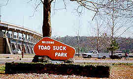

CSCI 241 : HANDS ON
Troubleshooting Lab
FIX ME! Troubleshooting Lab
A Picture of My Cat Fluffy after her web page failed to validate:
A real park in a ridiculously named town in Arkansas:

Chocolate, Always and Forever